Інструментальна панель асоціативні види-панель, на якій розташовані кнопки виклику команд створення видів.
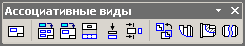Інструментальна панель Допоміжна геометрія Панель, на якій розташовані кнопки виклику команд побудови допоміжних прямих і площин.
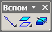На панелі Вставка в текст розташовані кнопки виклику команд вставки в текст різних об'єктів.
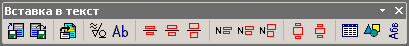Інструментальна панель Виділення Панель, на якій розташовані кнопки виклику команд виділення об'єктів графічних документів. Панель доступна, якщо в документі вже створені будь-які об'єкти.
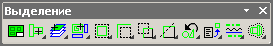Інструментальна панель Геометрія Панель, на якій розташовані кнопки виклику команд побудови геометричних об'єктів.
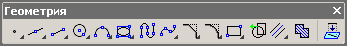Інструментальна панель Вимірювання (2D). На ній розташовані кнопки виклику команд вимірювань при побудові плоских креслень. Доступна при роботі з кресленнями і фрагментами.
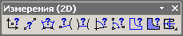Інструментальна панель Вимірювання (3D) Панель, на якій розташовані кнопки виклику команд вимірювань при роботі з ескізами при моделюванні деталей.
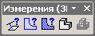Компактна інструментальна панель Кріпильні вироби Включає наступні панелі з кнопками виклику команд бібліотеки:
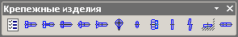Інструментальна панель Позначення Панель, на якій розташовані кнопки виклику команд простановки позначень.
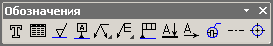Інструментальна панель Параметризація Панель, на якій розташовані кнопки виклику команд накладення зв'язків і обмежень на геометричні об'єкти.
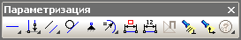Інструментальна панель Поверхні викликає кнопки команд побудови поверхонь.
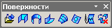Інструментальна панель Просторові криві Панель, на якій розташовані кнопки виклику команд побудови просторових кривих.
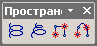Інструментальна панель Розміри Панель, на якій розташовані кнопки виклику команд простановки розмірів.
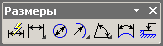Інструментальна панель редагування Панель, на якій розташовані кнопки виклику команд редагування геометричних об'єктів.
\ 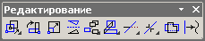Інструментальна панель Редагування деталі Панель, на якій розташовані кнопки виклику команд редагування моделей деталей.
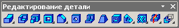Інструментальна панель редагування збірки Панель, на якій розташовані кнопки виклику команд редагування складальних моделей.
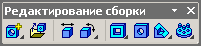Інструментальна панель Сполучення Панель, на якій розташовані кнопки виклику команд сполучення компонентів збірки.
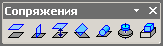Інструментальна панель Специфікація Панель, на якій розташовані кнопки виклику команд роботи зі специфікацією.
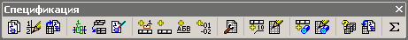Інструментальна панель Таблицы и границы Панель, на якій розташовані кнопки виклику команд оформлення таблиці і редагування її конфігурації.
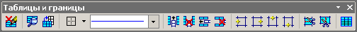Інструментальна панель Условные обозначения Панель, на якій розташовані кнопки виклику команд створення умовних позначень.
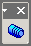Інструментальна панель Фильтры Панель, на якій розташовані кнопки виклику команд фільтрів об'єктів.
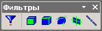нструментальна панель Форматирование Панель, на якій розташовані кнопки виклику команд форматування тексту.
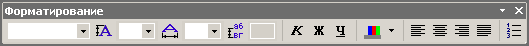Інструментальна панель Элементы листового тела Панель, на якій розташовані кнопки виклику команд побудови листового тіла.
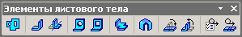